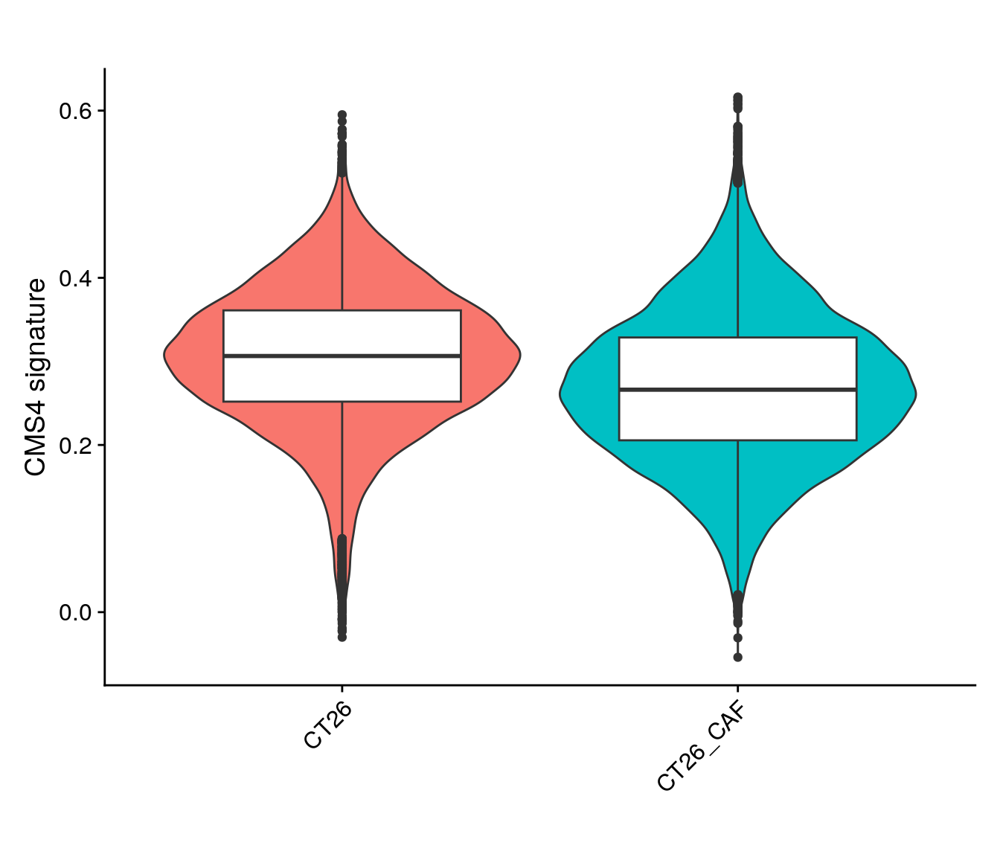
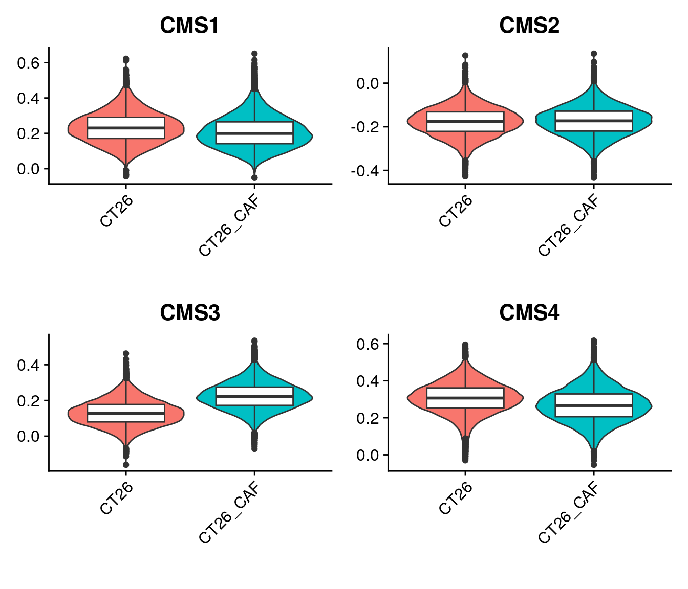

Last updated: 2026-02-06
Checks: 5 2
Knit directory: PIPAC_spatial/
This reproducible R Markdown analysis was created with workflowr (version 1.7.1). The Checks tab describes the reproducibility checks that were applied when the results were created. The Past versions tab lists the development history.
The R Markdown is untracked by Git. To know which version of the R
Markdown file created these results, you’ll want to first commit it to
the Git repo. If you’re still working on the analysis, you can ignore
this warning. When you’re finished, you can run
wflow_publish to commit the R Markdown file and build the
HTML.
Great job! The global environment was empty. Objects defined in the global environment can affect the analysis in your R Markdown file in unknown ways. For reproduciblity it’s best to always run the code in an empty environment.
The command set.seed(20240917) was run prior to running
the code in the R Markdown file. Setting a seed ensures that any results
that rely on randomness, e.g. subsampling or permutations, are
reproducible.
Great job! Recording the operating system, R version, and package versions is critical for reproducibility.
Nice! There were no cached chunks for this analysis, so you can be confident that you successfully produced the results during this run.
Using absolute paths to the files within your workflowr project makes it difficult for you and others to run your code on a different machine. Change the absolute path(s) below to the suggested relative path(s) to make your code more reproducible.
| absolute | relative |
|---|---|
| /home/hnatri/PIPAC_spatial/ | . |
| /home/hnatri/PIPAC_spatial/code/PIPAC_colors_themes.R | code/PIPAC_colors_themes.R |
| /home/hnatri/PIPAC_spatial/code/plot_functions.R | code/plot_functions.R |
| /home/hnatri/PIPAC_spatial/templates.CMS.rda | templates.CMS.rda |
| /home/hnatri/PIPAC_spatial/CT26_CAF_CMS4signature.pdf | CT26_CAF_CMS4signature.pdf |
Great! You are using Git for version control. Tracking code development and connecting the code version to the results is critical for reproducibility.
The results in this page were generated with repository version 09d976d. See the Past versions tab to see a history of the changes made to the R Markdown and HTML files.
Note that you need to be careful to ensure that all relevant files for
the analysis have been committed to Git prior to generating the results
(you can use wflow_publish or
wflow_git_commit). workflowr only checks the R Markdown
file, but you know if there are other scripts or data files that it
depends on. Below is the status of the Git repository when the results
were generated:
Ignored files:
Ignored: cell_annotation_final_topmarkers.tsv
Ignored: cell_immune_cluster_marker_annotations.tsv
Ignored: cell_nonimmune_cluster_marker_annotations.tsv
Ignored: celltype_markers.tsv
Ignored: code/.RData
Ignored: code/.Rapp.history
Ignored: code/.Rhistory
Ignored: code/Proximity_analysis/.DS_Store
Ignored: code/Proximity_analysis/data/
Ignored: code/Proximity_analysis/output/
Ignored: code/RSC_latest_EDM_2025-08-06/
Ignored: code/celltype_proximity_tumor.Rout
Ignored: code/scGSEA_CAFs.Rout
Ignored: code/update_metadata.Rout
Ignored: immune_cluster_marker_annotations_2ndpass.tsv
Ignored: immune_prelim_annot_topmarkers.tsv
Ignored: nonimmune_cluster_marker_annotations_2ndpass.tsv
Ignored: nonimmune_prelim_annot_topmarkers.tsv
Ignored: output/proximity_compiled.tsv
Ignored: output/tumor_proximity_compiled.tsv
Ignored: tumor_posttreatment_proximity_compiled.tsv
Ignored: tumor_pretreatment_proximity_compiled.tsv
Ignored: tumor_proximity_compiled.tsv
Untracked files:
Untracked: CT26_CAF_CMS4signature.pdf
Untracked: CT26_CAF_UMAP.pdf
Untracked: CT26_CAF_UMAP_sample.pdf
Untracked: CT26_CAF_celltypeprops.pdf
Untracked: CT26_CAF_pathways.pdf
Untracked: Rplots.pdf
Untracked: analysis/CAF_analysis.Rmd
Untracked: analysis/PDX_CAF_scRNAseq_CMS.Rmd
Untracked: analysis/PDX_CAF_scRNAseq_analysis.Rmd
Untracked: analysis/PDX_CAF_scRNAseq_processing.Rmd
Untracked: analysis/pretty_plots.Rmd
Untracked: analysis/recluster.Rmd
Untracked: analysis/updating_annotations.Rmd
Untracked: code/.RDataTmp
Untracked: code/.RDataTmp1
Untracked: code/.RDataTmp2
Untracked: code/.RDataTmp3
Untracked: code/.RDataTmp4
Untracked: code/scGSEA_CAFs.R
Untracked: enrichment_tumor_posttreatment_scores_compiled.tsv
Untracked: enrichment_tumor_pretreatment_scores_compiled.tsv
Untracked: enrichment_tumorscores_compiled.tsv
Untracked: geneSets.CMS.rda
Untracked: ncells.tsv
Untracked: templates.CMS.rda
Unstaged changes:
Modified: analysis/CAF_bulkRNAseq.Rmd
Modified: analysis/arm3_DEGs.Rmd
Modified: analysis/arm3_comparative_analysis.Rmd
Modified: analysis/finalize_annotations.Rmd
Modified: analysis/proximity.Rmd
Modified: code/PIPAC_colors_themes.R
Modified: code/anndata_to_seurat.R
Modified: code/celltype_proximity_09232025.R
Modified: code/celltype_proximity_tumor.R
Modified: code/seurat_to_anndata.R
Modified: code/update_metadata.R
Modified: enrichment_tumor_scores_compiled.tsv
Note that any generated files, e.g. HTML, png, CSS, etc., are not included in this status report because it is ok for generated content to have uncommitted changes.
There are no past versions. Publish this analysis with
wflow_publish() to start tracking its development.
library(workflowr)
library(Seurat)
library(googlesheets4)
library(tidyverse)
library(plyr)
library(org.Hs.eg.db)
library(org.Mm.eg.db)
library(biomaRt)
library(Biobase) # if input is ExpressionSet
library(CMScaller)
setwd("/home/hnatri/PIPAC_spatial/")
set.seed(1234)
options(future.globals.maxSize = 30000 * 1024^2)
reduction <- "umap"
source("/home/hnatri/PIPAC_spatial/code/PIPAC_colors_themes.R")
source("/home/hnatri/PIPAC_spatial/code/plot_functions.R")seurat_data <- readRDS("/scratch/hnatri/PIPAC/PDX_CAF_Seurat_integrated.rds")
table(seurat_data$Sample)
CT26 CT26_CAF
19928 25755 # Pseudobulk of tumor
t_cells <- c(12, 13)
myeloid <- c(10, 11)
immune <- c(17, 21, 20, 22, 24, 23)
tumor_caf <- setdiff(unique(seurat_data$harmony_snn_res.0.8), c(t_cells, myeloid, immune))
tumor_only <- subset(seurat_data, subset = harmony_snn_res.0.8 %in% tumor_caf)
DefaultAssay(tumor_only) <- "RNA"
tumor_only <- NormalizeData(tumor_only)
Idents(tumor_only) <- tumor_only$Sample
pbcounts <- AggregateExpression(tumor_only,
normalization.method = "none")
pbcounts <- pbcounts[["RNA"]]ensembl <- useMart("ensembl", dataset="hsapiens_gene_ensembl")
geneinfo <- getBM(attributes=c("hgnc_symbol", "ensembl_gene_id",
"entrezgene_id"),
filters = 'hgnc_symbol',
values = rownames(pbcounts),
mart = ensembl)
pbcounts <- as.data.frame(pbcounts)
pbcounts$gene <- mapvalues(rownames(pbcounts),
from = geneinfo$hgnc_symbol,
to = geneinfo$entrezgene_id)
pbcounts$gene <- ifelse(pbcounts$gene %in% rownames(pbcounts), NA, pbcounts$gene)
pbcounts <- pbcounts[complete.cases(pbcounts),]
pbcounts <- dplyr::group_by(pbcounts, gene) %>%
mutate(row_number() == 1) %>%
filter(`row_number() == 1` == TRUE)
pbcounts <- as.data.frame(pbcounts)
rownames(pbcounts) <- pbcounts$gene
pbcounts <- pbcounts[,c(1, 2)]
# Not applying normalization
res <- CMScaller(emat=pbcounts, RNAseq=T, FDR=0.1)
head(res, n=3)load("/home/hnatri/PIPAC_spatial/templates.CMS.rda")
features_list <- split(templates.CMS, templates.CMS$class)
features_list <- lapply(features_list, function(xx){
xx$symbol
})seurat_data <- AddModuleScore(seurat_data,
features = features_list,
name = "CMSmodule")
VlnPlot(tumor_only,
features = c("CMSmodule1", "CMSmodule2", "CMSmodule3", "CMSmodule4"),
group.by = "Sample",
pt.size = 0,
ncol = 2) &
geom_boxplot(width=0.6, fill="white") &
NoLegend() &
xlab("")res_df <- readRDS("/scratch/hnatri/PIPAC/scGSVA_out.rds")
for(i in names(features_list)){
seurat_data@meta.data[,i] <- res_df[,i]
}
# Pseudobulk of tumor
t_cells <- c(12, 13)
myeloid <- c(10, 11)
immune <- c(17, 21, 20, 22, 24, 23)
tumor_caf <- setdiff(unique(seurat_data$harmony_snn_res.0.8), c(t_cells, myeloid, immune))
tumor_only <- subset(seurat_data, subset = harmony_snn_res.0.8 %in% tumor_caf)
VlnPlot(tumor_only,
features = c("CMS4"),
group.by = "Sample",
pt.size = 0,
ncol = 1) &
geom_boxplot(width=0.6, fill="white") &
NoLegend() &
xlab("") &
ylab("CMS4 signature") &
ggtitle("")
g1 <- tumor_only@meta.data %>%
filter(Sample == "CT26")
g2 <- tumor_only@meta.data %>%
filter(Sample == "CT26_CAF")
summary(g1$CMS4) Min. 1st Qu. Median Mean 3rd Qu. Max.
-0.02997 0.25184 0.30640 0.30405 0.36104 0.59506 summary(g2$CMS4) Min. 1st Qu. Median Mean 3rd Qu. Max.
-0.05396 0.20556 0.26613 0.26799 0.32862 0.61623 t.test(g1$CMS4, g2$CMS4)
Welch Two Sample t-test
data: g1$CMS4 and g2$CMS4
t = 38.157, df = 31751, p-value < 2.2e-16
alternative hypothesis: true difference in means is not equal to 0
95 percent confidence interval:
0.03420293 0.03790703
sample estimates:
mean of x mean of y
0.3040456 0.2679906 filename <- "/home/hnatri/PIPAC_spatial/CT26_CAF_CMS4signature.pdf"
pdf(file=filename,
width = 4,
height = 4)
VlnPlot(tumor_only,
features = c("CMS4"),
group.by = "Sample",
pt.size = 0,
ncol = 1) &
#geom_boxplot(width=0.6, fill="white") &
NoLegend() &
xlab("") &
ylab("CMS4 signature") &
ggtitle("")
dev.off()png
2 VlnPlot(tumor_only,
features = c("CMS1", "CMS2", "CMS3", "CMS4"),
group.by = "Sample",
pt.size = 0,
ncol = 2) &
geom_boxplot(width=0.6, fill="white") &
NoLegend() &
xlab("")
#ylab("CMS4 signature") &
#ggtitle("")
#plot(tumor_only$CMSmodule1, tumor_only$CMS1)
sessionInfo()R version 4.3.0 (2023-04-21)
Platform: x86_64-pc-linux-gnu (64-bit)
Running under: Ubuntu 22.04.3 LTS
Matrix products: default
BLAS: /usr/lib/x86_64-linux-gnu/openblas-pthread/libblas.so.3
LAPACK: /usr/lib/x86_64-linux-gnu/openblas-pthread/libopenblasp-r0.3.20.so; LAPACK version 3.10.0
locale:
[1] LC_CTYPE=en_US.UTF-8 LC_NUMERIC=C
[3] LC_TIME=en_US.UTF-8 LC_COLLATE=en_US.UTF-8
[5] LC_MONETARY=en_US.UTF-8 LC_MESSAGES=en_US.UTF-8
[7] LC_PAPER=en_US.UTF-8 LC_NAME=C
[9] LC_ADDRESS=C LC_TELEPHONE=C
[11] LC_MEASUREMENT=en_US.UTF-8 LC_IDENTIFICATION=C
time zone: Etc/UTC
tzcode source: system (glibc)
attached base packages:
[1] grid stats4 stats graphics grDevices utils datasets
[8] methods base
other attached packages:
[1] ComplexHeatmap_2.18.0 viridis_0.6.3 viridisLite_0.4.2
[4] circlize_0.4.15 RColorBrewer_1.1-3 CMScaller_2.0.1
[7] biomaRt_2.58.2 org.Mm.eg.db_3.18.0 org.Hs.eg.db_3.18.0
[10] AnnotationDbi_1.64.1 IRanges_2.36.0 S4Vectors_0.40.2
[13] Biobase_2.62.0 BiocGenerics_0.48.1 plyr_1.8.8
[16] lubridate_1.9.2 forcats_1.0.0 stringr_1.5.0
[19] dplyr_1.1.2 purrr_1.0.2 readr_2.1.4
[22] tidyr_1.3.0 tibble_3.2.1 ggplot2_3.4.2
[25] tidyverse_2.0.0 googlesheets4_1.1.0 Seurat_5.0.1
[28] SeuratObject_5.0.2 sp_1.6-1 workflowr_1.7.1
loaded via a namespace (and not attached):
[1] RcppAnnoy_0.0.20 splines_4.3.0 later_1.3.1
[4] filelock_1.0.2 bitops_1.0-7 cellranger_1.1.0
[7] polyclip_1.10-4 XML_3.99-0.14 fastDummies_1.7.3
[10] lifecycle_1.0.3 doParallel_1.0.17 rprojroot_2.0.3
[13] globals_0.16.2 processx_3.8.1 lattice_0.21-8
[16] MASS_7.3-60 magrittr_2.0.3 plotly_4.10.2
[19] sass_0.4.6 rmarkdown_2.22 jquerylib_0.1.4
[22] yaml_2.3.7 httpuv_1.6.11 sctransform_0.4.1
[25] spam_2.9-1 spatstat.sparse_3.0-1 reticulate_1.30
[28] cowplot_1.1.1 pbapply_1.7-0 DBI_1.1.3
[31] abind_1.4-5 zlibbioc_1.48.2 Rtsne_0.16
[34] RCurl_1.98-1.12 rappdirs_0.3.3 git2r_0.32.0
[37] GenomeInfoDbData_1.2.11 ggrepel_0.9.3 irlba_2.3.5.1
[40] listenv_0.9.0 spatstat.utils_3.0-3 goftest_1.2-3
[43] RSpectra_0.16-1 spatstat.random_3.1-5 fitdistrplus_1.1-11
[46] parallelly_1.36.0 leiden_0.4.3 codetools_0.2-19
[49] xml2_1.3.4 shape_1.4.6 tidyselect_1.2.0
[52] farver_2.1.1 BiocFileCache_2.10.2 matrixStats_1.0.0
[55] spatstat.explore_3.2-1 googledrive_2.1.0 jsonlite_1.8.5
[58] GetoptLong_1.0.5 ellipsis_0.3.2 progressr_0.13.0
[61] iterators_1.0.14 ggridges_0.5.4 survival_3.5-5
[64] foreach_1.5.2 progress_1.2.2 tools_4.3.0
[67] ica_1.0-3 Rcpp_1.0.10 glue_1.6.2
[70] gridExtra_2.3 xfun_0.39 GenomeInfoDb_1.38.8
[73] withr_2.5.0 fastmap_1.1.1 fansi_1.0.4
[76] callr_3.7.3 digest_0.6.31 timechange_0.2.0
[79] R6_2.5.1 mime_0.12 colorspace_2.1-0
[82] scattermore_1.2 tensor_1.5 spatstat.data_3.0-1
[85] RSQLite_2.3.1 utf8_1.2.3 generics_0.1.3
[88] data.table_1.14.8 prettyunits_1.1.1 httr_1.4.6
[91] htmlwidgets_1.6.2 whisker_0.4.1 uwot_0.1.14
[94] pkgconfig_2.0.3 gtable_0.3.3 blob_1.2.4
[97] lmtest_0.9-40 XVector_0.42.0 htmltools_0.5.5
[100] dotCall64_1.0-2 clue_0.3-64 scales_1.2.1
[103] png_0.1-8 knitr_1.43 rstudioapi_0.14
[106] rjson_0.2.21 tzdb_0.4.0 reshape2_1.4.4
[109] curl_5.0.1 nlme_3.1-162 GlobalOptions_0.1.2
[112] cachem_1.0.8 zoo_1.8-12 KernSmooth_2.23-21
[115] vipor_0.4.5 parallel_4.3.0 miniUI_0.1.1.1
[118] ggrastr_1.0.2 pillar_1.9.0 vctrs_0.6.5
[121] RANN_2.6.1 promises_1.2.0.1 dbplyr_2.3.2
[124] xtable_1.8-4 cluster_2.1.4 beeswarm_0.4.0
[127] evaluate_0.21 cli_3.6.1 compiler_4.3.0
[130] rlang_1.1.6 crayon_1.5.2 future.apply_1.11.0
[133] labeling_0.4.2 ps_1.7.5 ggbeeswarm_0.7.2
[136] getPass_0.2-4 fs_1.6.2 stringi_1.7.12
[139] deldir_1.0-9 munsell_0.5.0 Biostrings_2.70.3
[142] lazyeval_0.2.2 spatstat.geom_3.2-1 Matrix_1.6-5
[145] RcppHNSW_0.5.0 hms_1.1.3 patchwork_1.1.2
[148] bit64_4.6.0-1 future_1.32.0 KEGGREST_1.42.0
[151] shiny_1.7.4 highr_0.10 ROCR_1.0-11
[154] gargle_1.4.0 igraph_1.4.3 memoise_2.0.1
[157] bslib_0.5.0 bit_4.0.5